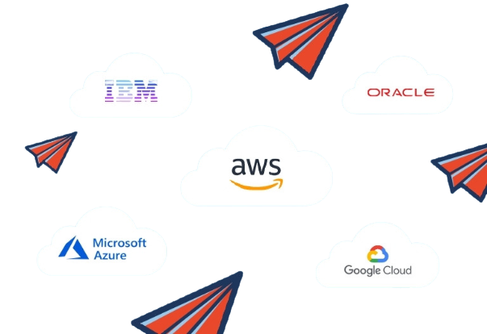

Let's talk about cloud computing
What is Cloud
Computing?
Cloud computing is a technology that uses the internet for storing and managing data on remote servers and then access data via the internet. i.e Amazon web Services(AWS), Google Cloud, Microsoft Azure etc.
Learn More
How does cloud computing work &
Cloud Computing advantages
Cloud computing works by allowing client devices to access data over the internet, from remote servers, databases and computers.An internet network connection links the front end (includes the accessing client device, browser, network and cloud software applications) with the back end, which consists of databases, servers and computers). Cloud computing services are devided in three categories called as models (SaaS, PaaS and IaaS).
Back-up and restore data
Excellent accessibility
Low maintenance cost
Mobility
Huge storage capacity
Cloud Computing
Statistics
Business
Corporate Data
Enterprises

Cloud Computing Vendors &
Cloud Computing Vendors &
Exampales
The cloud service market has no shortage of providers. The three largest public cloud service providers, who have established themselves as dominant fixtures in the industry, are Amazon Web Services (AWS), Microsoft Azure and Google Cloud. There are other major cloud service providers include Apple, Citrix, IBM, Salesforce, Alibaba, Oracle Cloud, VMware, SAP, Joyent, Rackspace.
Google Docs, Microsoft Office 365: Users can access Google Docs and Microsoft Office 365 through the internet. Users can be more productive because they can access work presentations and spreadsheets stored in the cloud at any time from anywhere on any device.
Email, Calendar, Skype, WhatsApp: Emails, calendars, Skype and WhatsApp take advantage of the cloud's ability to provide users with access to data remotely so they can access their personal data on any device, whenever and wherever they want.
Zoom: Zoom is a cloud-based software platform for video and audio conferencing that records meetings and saves them to the cloud, enabling users to access them anywhere and at any time.
AWS Lambda: Lambda allows developers to run code for applications or back-end services without having to provision or manage servers.
Models of Cloud
computing
01
Infrastructure as a service (IaaS)
Infrastructure as a service is of acquiring computing capabilities on demand and over the web. Such resources include storage facilities, networks, processing power, and virtual private servers.
02
Software as a Service (SaaS)
SaaS is a distribution model that delivers software applications over the internetthese applications are often called web services.
03
Platfrom as a Service (PaaS)
In the PaaS model, cloud providers host development tools on their infrastructures. Users access these tools over the internet using APIs, web portals or gateway software.
Cloud Computing
challenges
Despite the clear upsides to relying on cloud services, cloud computing carries its own challenges for IT professionals:
Cost management:
Pay-as-you-go subscription plans for cloud use, along with fluctuating workloads, can make it tough to define and predict final costs.Multiple clouds:
Multi-cloud deployments can disjoint efforts to address more general cloud computing challenges.IT governance:
Cloud computing can make IT governance difficult, as there is no control over provisioning.Vendor lock-in:
Oftentimes, switching between cloud providers can cause significant issues like technical incompatibilities, legal limitations.Cloud migration:
It process of moving applications and other data to a cloud infrastructure oftentimes causes complications.
Cloud Features &
Characteristics
Automation and
Orchestration
Application migration
VM images/instances
Configuration management
Cost management
Cloud instance
right sizing
User changeback
and billing management
Perfomance Monitoring
Storage
Network
Applications
Compute
Governance and compilance
Risk assessment/
threat analysis
Audit
Service and resource
governance
Security
IAM
Encryption
Mobile/endpoint
security
Easy Maintenance
Effortlessly maintained
Low downtime
Frequently updated
Quicker updates
Some common doubts
often asked by people
What is Cloud Computing?
Cloud computing is the on-demand availability of computer system resources, especially data storage and computing power, without direct active management by the user.
What are the benefits of cloud computing?
The cloud provides many benefits including cost reduction, improved performance and enhanced security, and it allows flexibility and scalability.
What is a cloud?
The cloud refers to software and services that run on the Internet, instead of locally on your computer. ... Some examples of cloud services include Google Drive, Apple iCloud, Netflix, Yahoo Mail, Dropbox and Microsoft OneDrive.
Which platforms are used for large scale cloud?
There are three major vendors in the public cloud platforms arena - Amazon Web Services (AWS), Microsoft's Azure, and Google Cloud Platform.
How many types cloud are there?
There are 4 main types of cloud computing: private clouds, public clouds, hybrid clouds, and multiclouds.
What different layers define cloud architecture?
Hardware Layer: This bottom most layer of cloud architecture, the hardware layer, primarily deals with all the hardware powering clouds.
Infrastructure Layer: Also called the virtualization layer, the infrastructure layer is where all the servers are pooled together into one.
Platform Layer: The platform layer comprises the operating system and other requisition structures and is based over the infrastructure layer.
Application Layer: As the name suggests, the application layer - the topmost layer - contains applications that directly interact with the end-user.
Future Of Cloud Computing
With cloud computing and the technology behind it there are many potential opportunities and capabilities. Cloud computing can open a whole new world of jobs, services, platforms, applications, and much more. There are thousands of possibilities beginning to form as the future of cloud computing starts to really take off.
Future of Cloud Computing in India
Investments in Cloud Management, Storage Networks, Security & Back-up services are expected to grow by 31% YoY till 2022; reflecting demand for Cloud-enabled infrastructural upgradations. Hybrid Cloud adoption in Indian organizations is set to grow by 49% in the next 3 years